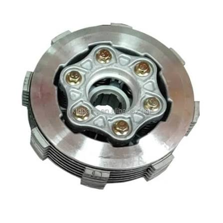

Clutch Lever
Inspect and adjust clutch lever operation, free play and positioning for smooth and comfortable control.
Keep your motorcycle shifting smoothly with professional clutch inspections, adjustments, cable repairs and clutch component replacement.

The clutch plays an important role in controlling power between the engine and gearbox. A worn or incorrectly adjusted clutch can make shifting difficult and affect how your motorcycle accelerates.
We inspect the complete clutch system, from the clutch lever and cable to the clutch plates and related internal components. We can adjust, repair or replace components depending on their condition.
Book a Clutch serviceFrom clutch lever adjustments and cable repairs to clutch plate replacement, we help keep your motorcycle shifting smoothly.
Inspect and adjust clutch lever operation, free play and positioning for smooth and comfortable control.
Inspect, lubricate, adjust or replace worn clutch cables that may cause heavy or inconsistent clutch operation.
Correct clutch free play and adjustment to help ensure proper clutch engagement and disengagement.
Inspect and replace worn clutch plates when slipping, poor engagement or excessive wear is detected.

A properly functioning clutch allows you to smoothly control the transfer of engine power while changing gears and coming to a stop.
Ignoring clutch problems can lead to increased wear, difficult gear changes, clutch slipping and eventually more expensive repairs.
These are some common signs that your motorcycle clutch may need inspection or repair.
Difficulty changing gears or finding neutral may indicate a clutch adjustment or component problem.
If the engine revs increase without a matching increase in speed, the clutch may be slipping.
A stiff or unusually heavy clutch lever may be caused by a dry, damaged or incorrectly adjusted cable.
Shuddering or sudden engagement when releasing the clutch can indicate wear or adjustment problems.
We identify the source of the problem before recommending the appropriate clutch repair.
We inspect the clutch lever, cable, adjustment and external components for signs of wear or damage.
We assess clutch operation and identify issues such as slipping, dragging or difficult engagement.
We adjust, repair or replace the required clutch components based on their condition.
We perform final checks to ensure proper clutch operation and smooth gear engagement.
Pricing depends on the clutch problem and components requiring attention. Adjustments, cable repairs, clutch plates and other replacement parts may be quoted separately.
From clutch levers and cables to clutch plates and related components, we'll help get your motorcycle shifting smoothly again.